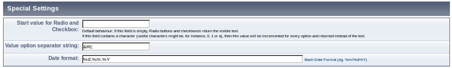

German
German  English
English
SPAM Protection << ^ Settings of MPForm ^
MPForm Documentation: Special Settings
Level of difficulty: B

- Start value for Radio and Checkbox
- Default behaviour: If this field stays empty, option fields and radio buttons submit their
title as values.
Just in case you plan to make some statistics with all submissions, long strings as titles for some options can be quite unhandy. It would be more easy when the options just have been enumerated. You can achieve this by setting this option Start value for Radio and Checkbox to the start value you prefer.
If you set it to a single character (reasonable examples would be, e.g. 0, 1 or a), this value will be incremented for each option and returned instead of the title.
Example: You set the start value to 1 and the user clicks on the third radio button of a question. This results in a return value of 3. If the start value would be A, the answer C would be written into the data base, and so on. - Value-Option Separator-String
- In case the values shall not be incremented, but still different from the description which the user sees, you can use this separator string. Example: Beispiel: The vaules among which the user can select are prices including the currency, (10 &Eurosign;, 15 &Eurosign;, 20 &Eurosign;) bu the values written to the database should be integers (withoud Euro-Symbol). It works like this: For each option field you specify the full string including the currency and append the Value-Option separator string to it and also the value which you would like to be written to the database (in the example the price without the Euro-Symbol). The string which is actually used as separator can be selected here in the settings of mpform.
- Date format
- This is the date format used by the Javascript Calendar. Manually the user can enter free text in a field of type Date.